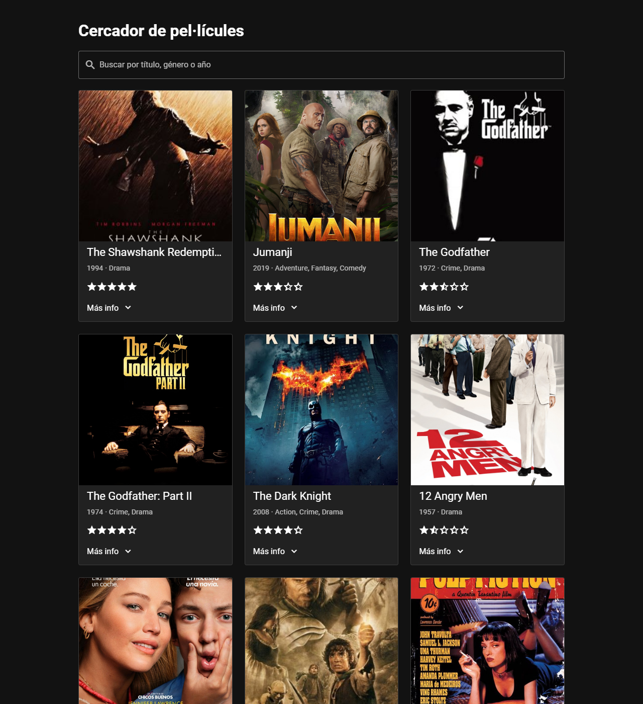
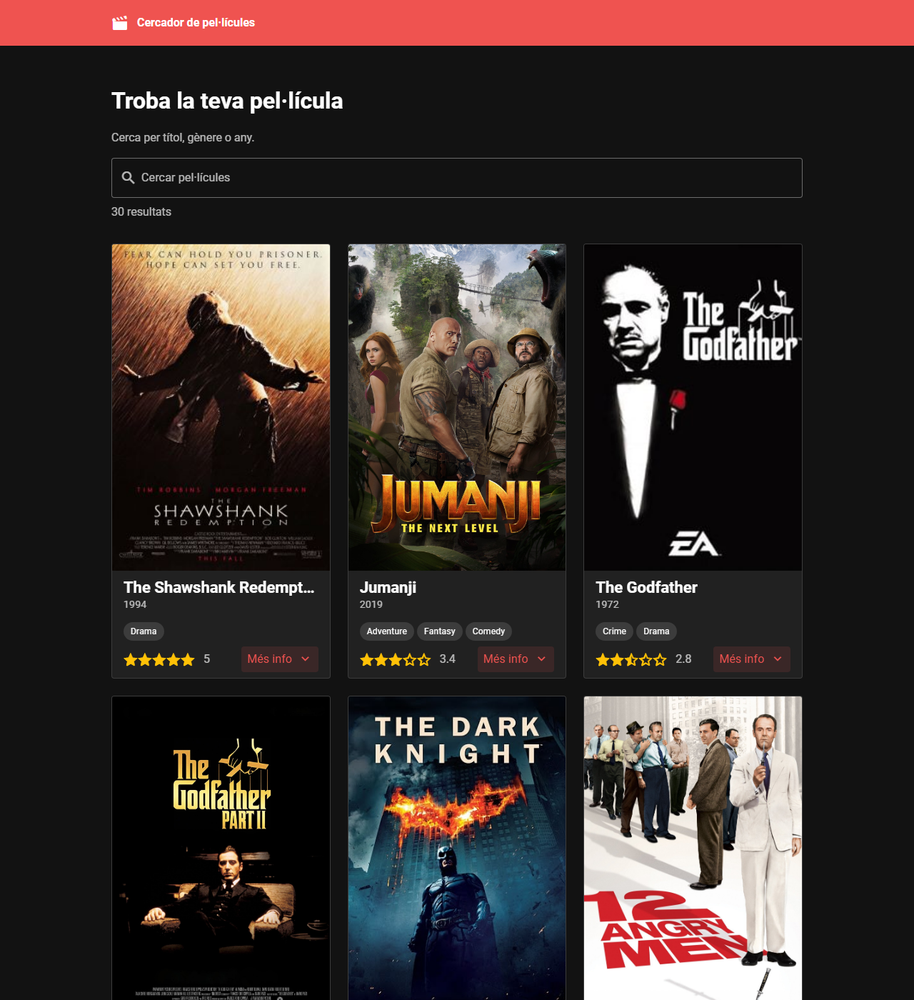
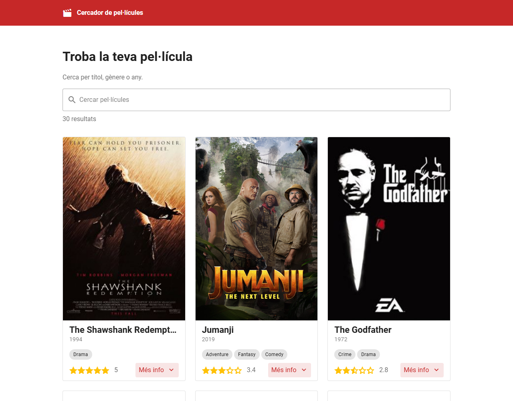
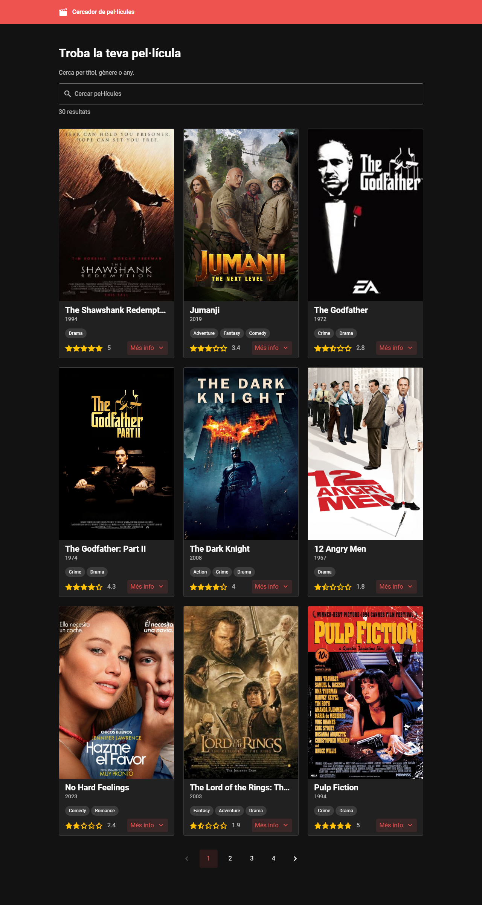
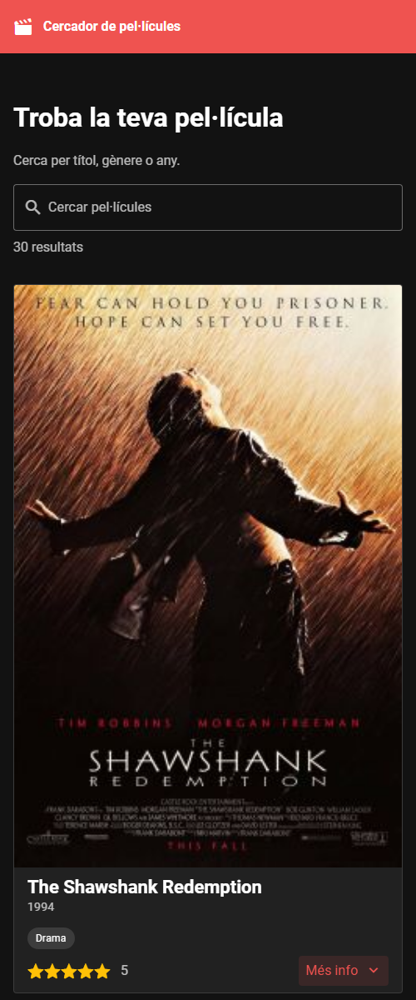

L'objectiu d'aquesta activitat és analitzar la interfície del Cercador de pel·lícules, detectar-ne els problemes de disseny visual i refactoritzar-la aplicant els quatre principis C.R.A.P.: Contrast, Repetició, Alineació i Proximitat.
L'aplicació és una web feta amb Vue 3 i Vuetify que consulta l'API pública
https://devsapihub.com/api-movies (30 pel·lícules) i permet cercar-les per títol, gènere o any.
Tota la comunicació amb l'API està centralitzada al fitxer communicationManager.js, de manera que la
refactorització només ha afectat la capa visual.
C.R.A.P. és un mètode proposat per Robin Williams a The Non-Designer's Design Book, pensat precisament per a persones que no són dissenyadores però han de construir interfícies. L'he triat per aquests motius:
mb-8, ga-1,
text-medium-emphasis…) sense escriure ni una línia de CSS propi, mantenint el projecte simple.
Revisant la interfície principi per principi es van detectar aquests problemes:
| Principi | Problema detectat |
|---|---|
| Contrast | No hi havia cap color d'accent: tot era blanc i gris. El botó “Más info” tenia el mateix aspecte que el text i no semblava una acció. No hi havia capçalera, i el títol de la pàgina competia amb els títols de les targetes. |
| Repetició | Idioma barrejat: el títol en català i el cercador, els botons i els missatges en castellà. Els gèneres eren text pla separat per comes, sense cap format comú. Les imatges es retallaven a una alçada fixa i cada pòster es veia diferent. |
| Alineació | El botó de cada targeta quedava just després del contingut; si una targeta tenia més text, els botons de la mateixa fila quedaven a alçades diferents. Els títols llargs es tallaven sense manera de veure'ls sencers. |
| Proximitat | L'any i els gèneres estaven en una sola línia, barrejant dos tipus d'informació. Les estrelles i el botó estaven en línies separades sense relació entre ells. No hi havia separació clara entre la zona de cerca i els resultats, ni cap indicació de quants resultats hi havia. |
| Quantitat | Es mostraven les 30 pel·lícules alhora en un desplaçament molt llarg, amb 30 pòsters carregant-se de cop. |
Si dos elements no són iguals, han de ser clarament diferents. El contrast serveix per marcar la jerarquia i guiar l'ull cap al que és important.
primary del tema. Només
s'utilitza a la capçalera, als botons “Més info” i a la paginació, de manera que el color sempre vol dir
“això és important o interactiu”.text-h4, negreta) → títol de targeta en negreta →
any i text secundari amb text-medium-emphasis (gris). Ara es distingeixen tres nivells clars.#C62828 en clar, #EF5350 en fosc).// src/plugins/vuetify.js
theme: {
defaultTheme: "system",
themes: {
light: { colors: { primary: "#C62828" } },
dark: { colors: { primary: "#EF5350" } },
},
},
Repetir els mateixos elements visuals a tot el disseny crea coherència i fa que l'usuari aprengui la interfície ràpidament.
MovieCard.vue) per a totes les pel·lícules: sempre el mateix ordre
(pòster → títol → any → gèneres → valoració + botó).v-chip) iguals a totes les targetes, en comptes de text pla.:aspect-ratio="2 / 3"), que és la proporció real d'un
pòster de cinema: es veuen sencers i tots iguals.variant="tonal", color primari) per a totes les accions.lang="ca" a l'HTML).Res no s'ha de col·locar a l'atzar: cada element ha de tenir una connexió visual amb un altre element de la pàgina.
v-container, de manera que tots comencen a la mateixa línia vertical.v-row/v-col): 3 columnes en escriptori, 2 en tauleta i
1 en mòbil, sempre amb el mateix espai entre targetes.d-flex flex-column) i la zona
d'accions té mt-auto, així totes les valoracions i botons d'una fila queden a la mateixa altura encara
que el contingut sigui diferent.:title="movie.title"), perquè totes les targetes tinguin la mateixa estructura vertical.<v-card border class="h-100 d-flex flex-column" flat> ... <v-card-actions class="mt-auto px-4"> <!-- sempre a la base -->
Els elements relacionats s'han d'agrupar; els que no tenen relació s'han de separar. La distància és la manera més simple de dir “això va junt”.
<section class="mb-8">) separada de la graella amb un espai gran.v-card-item) i gèneres separats en una fila pròpia:
ja no es barregen dos tipus d'informació en una sola línia.
A més dels quatre principis, s'ha reduït el nombre de pel·lícules visibles a 9 per pàgina (una graella de 3×3
en escriptori) amb un component de paginació (v-pagination).
const PER_PAGE = 9;
const pageCount = computed(() => Math.ceil(movies.value.length / PER_PAGE));
const pageMovies = computed(() => {
const start = (page.value - 1) * PER_PAGE;
return movies.value.slice(start, start + PER_PAGE);
});




| Principi | Abans | Després |
|---|---|---|
| Contrast | Tot blanc i gris, sense capçalera, botó poc visible. | Color primari únic per a accions, capçalera de color, tres nivells tipogràfics, estrelles en ambre. |
| Repetició | Idioma barrejat, gèneres en text pla, pòsters retallats de manera diferent. | Tot en català, gèneres com a xips, pòsters 2:3, mateix estil de botó a tot arreu. |
| Alineació | Botons a alçades diferents, sense capçalera alineada. | Una sola vora esquerra, graella 3/2/1 columnes, accions fixades a la base de la targeta. |
| Proximitat | Any i gèneres barrejats, valoració i botó separats, sense comptador. | Bloc de cerca + comptador agrupats, títol+any junts, gèneres a part, valoració+botó junts. |
| Quantitat | 30 pel·lícules en un sol desplaçament. | 9 per pàgina amb paginació; la cerca segueix filtrant les 30. |
src/plugins/vuetify.js – tema clar/fosc amb color primari.src/App.vue – capçalera amb icona i nom de l'aplicació.src/pages/index.vue – bloc de cerca, comptador, missatges en català i paginació de 9.src/components/MovieCard.vue – nova estructura de targeta (pòster 2:3, xips, accions a la base).index.html – lang="ca" i títol corregit.Sense canviar la funcionalitat ni afegir CSS propi, aplicar els quatre principis C.R.A.P. ha transformat una interfície plana en una interfície amb jerarquia clara. Ara l'usuari sap on mirar (contrast), entén la interfície després de veure una sola targeta (repetició), percep l'ordre de la graella (alineació) i identifica immediatament quina informació va junta (proximitat).
La reducció a 9 pel·lícules per pàgina completa la millora: menys soroll, una graella sempre completa i una càrrega més ràpida. C.R.A.P. ha demostrat ser un mètode útil per a desenvolupadors perquè converteix decisions de disseny en criteris concrets i fàcils de justificar.